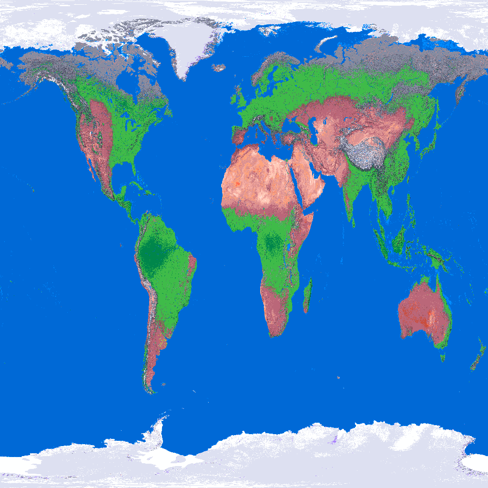
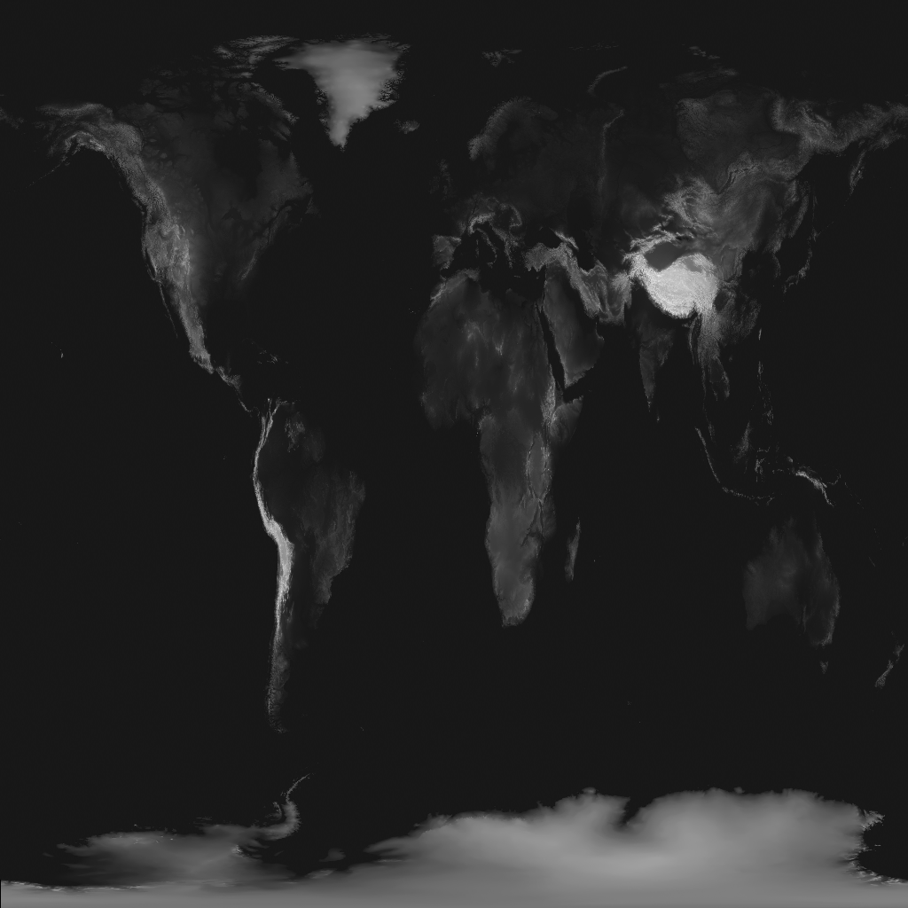

<!DOCTYPE html>
<html>
<head>
<meta charset="utf-8">
<meta name="viewport" content="width=device-width, initial-scale=1.0, user-scalable=no">
<title>Earth</title>
</head>

<body>
</body>




<script id="shaderFs" type="x-shader/x-fragment" res="1/2">
#define fov 1.
#define eps 0.05
#define pi 3.1415926535898

struct Ray {
  vec3 origin;
  vec3 position;
  vec3 direction;
  vec3 normal;
  vec3 view;
};

float sdSphere(vec3 position, float r) {
  return length(position) - r;
}

vec3 oRepeat(vec3 position, vec3 translation) {
  return mod(position,translation) - 0.5*translation;
}

vec2 oUnion(vec2 o1, vec2 o2) {
  return o1.x < o2.x ? o1 : o2;
}

vec2 oInter(vec2 o1, vec2 o2) {
  return o1.x < -o2.x ? vec2(-o2.x,o2.y) : o1;
}

vec2 scene(vec3 p) {
  vec2 sp = vec2(sdSphere(p-
  	p*texture(
  		u_image0,vec2(atan2(p.z,p.x),1.-p.y+.5)).rgb/32.,.5
    ),2.
  );
  //vec3 plight = vec3(4.*cos(iTime),4,4.*sin(iTime));
  //vec2 su = vec2(sdSphere(p-plight,3.),3.);
  //vec2 obj = sp;
  return sp;
}

vec3 getNormal( in vec3 pos ) {
  vec2 e = vec2(1.0,-1.0)*.5773;
  return normalize(e.xyy*scene(pos+e.xyy*eps).x +
    e.yyx*scene( pos + e.yyx*eps ).x +
    e.yxy*scene( pos + e.yxy*eps ).x +
    e.xxx*scene( pos + e.xxx*eps ).x );
}

void material(inout Ray ray, vec2 object, inout vec3 acolor, inout vec3 dcolor, inout vec3 scolor) {
  vec3 p = ray.position;
  if (object.y == 2.0) {
    acolor = texture(u_image0,vec2(atan2(p.z,p.x),1.-p.y+.5)).rgb;
  }
  if (object.y == 1.0) {
    float f = mod( floor(p.x) + floor(p.z), 2.0);
    acolor = vec3(f);
  }
  if (object.y == 0.0) {
    acolor = vec3(0.0,0.0,2.0)*.0;
  }
}

vec2 castRay(inout Ray ray, float raystep, float maxdis) {
  vec2 object;

  for (int i=0; i<32; i++) {
    ray.position = ray.origin + ray.direction * raystep;
    object = scene(ray.position);
    raystep += object.x;
    if (raystep>maxdis) break;
    // object.x<eps ||
  }
  // sky material
  object.y = raystep < maxdis ? object.y : 0.0;

  return object;
}

vec3 light(vec2 object, inout Ray ray) {

  vec3 acolor = vec3(1.0);
  vec3 dcolor = vec3(1.0);
  vec3 scolor = vec3(1.0);

  material(ray, object, acolor, dcolor, scolor);

  vec3 color = acolor;

  if (object.y != 0.0) {
    vec3 v0 = vec3(-.25,.25,.75);
    float fix0 = 180./pi;
    v0 = rotateY(rotateX(v0,iCamera.x/fix0),-iCamera.y/fix0);
    vec3 plight = v0;
    vec3 dlight = normalize(plight-ray.position);
    float lambert = max(dot(dlight, ray.normal),.25);
    vec3 halfv = normalize(dlight + ray.view);
    float specular = pow(max(dot(halfv,ray.normal),0.0),128.0);

    color *= lambert * dcolor;
    color += specular * scolor;
  }
  if (object.y == 3.0) {
  	color = mix(vec3(.75,.25,0),vec3(0),abs(-length(ray.origin-ray.position)/20.));
  }
  // Gamma correction
  color = pow(color,vec3(0.454545));
  return clamp(color,0.0,1.0);
}

Ray setupCam() {
  Ray ray;
  vec2 uv = -1.0 + 2.0 * gl_FragCoord.xy / iResolution;
  uv.x *= iResolution.x / iResolution.y;
  vec2 p = (gl_FragCoord.xy-0.5*iResolution.xy)/min(iResolution.x, iResolution.y);

  //camera position
  vec3 v = vec3(0,0,.75);
  vec3 target = vec3(0);
  float fix = 180./pi;
  vec3 orbit = rotateY(rotateX(v,iCamera.x/fix),-iCamera.y/fix);
  ray.origin = orbit;

  vec3 forward = normalize(target - orbit);
	vec3 right = normalize(cross(vec3(0, 1, 0),forward));
	vec3 up = normalize(cross(forward,right));
	ray.direction = normalize(uv.x * right + uv.y * up + forward * fov);
  return ray;
}

void mainImage(out vec4 outColor,
in vec2 fragCoord) {
  Ray ray = setupCam();
  vec2 object = castRay(ray,0.,2.);
  ray.normal = getNormal(ray.position);
  ray.view = -ray.direction;
  vec3 color = light(object,ray);

  highp int i = int(mod(floor(gl_FragCoord.x),4.0)+mod(floor(gl_FragCoord.y),4.0)*4.0);
  float d = (dither[i])/256.0;

  outColor = vec4(color+d*2.,1.0);
}
</script>
<script src="core/core.js"></script>
</html>
